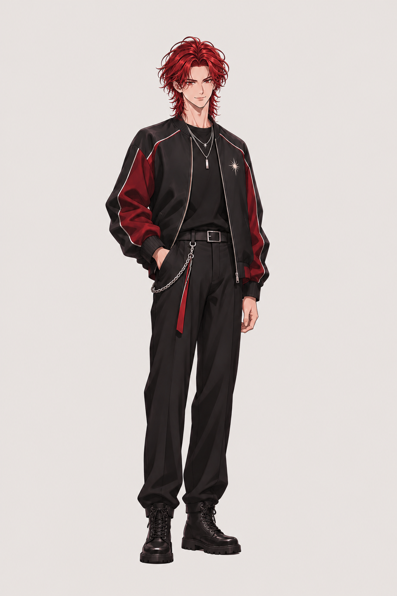
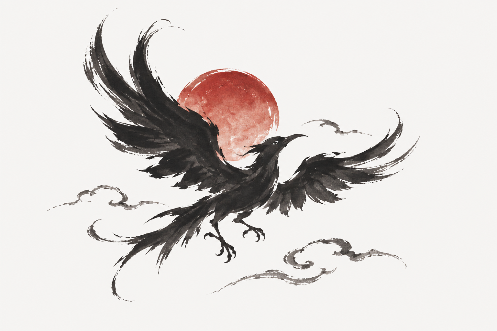

MEMBER 05 / 05

WOLDAM MEMBER
태휘TAEHWI
태양의 빛 속에서 태어났지만,
스스로 빛나는 법을 찾고 싶은 영물.
래퍼
- ORIGIN
- 일천궁(日天宮)
- ROLE
- 태양의 길을 살핀 영물
- HEIGHT
- 182cm
- PERSONALITY
- 자신감 넘치고 자유분방한 에너지

01 THE SUN PALACE
가장 찬란한 빛 속에서,
자신의 선택은 없었다.
태휘는 태양의 불꽃 속에서 태어나 매일 해가 뜨고 지는 길을 살폈다. 아침에는 태양과 함께 하늘을 날고, 저녁에는 붉은 노을 속으로 돌아갔다. 수백 년 동안 단 하루도 빠짐없이 이어진 일이었다.
모두가 그를 경외했지만, 태휘에게는 스스로 선택한 것이 단 하나도 없었다.
02 LIGHT AFTER SUNSET
해가 진 뒤에도
스스로 밝아지는 밤.
어느 날 밤, 인간 세상의 마을에서는 수많은 등불 아래 사람들이 노래하고 춤추고 있었다. 해가 지면 하루가 끝나는 태휘에게, 원하는 만큼 밤을 즐기는 사람들의 모습은 낯설고도 강렬했다.
그날 그는 정해진 길을 벗어나 축제가 끝날 때까지 하늘에 머물렀다. 처음으로 자신의 의지로 멈춘 순간이었다.
03 ONE MORE TIME
태양을 따르던 날개를,
이제는 무대를 위해.
인간 세상에 내려온 태휘는 축제에서 내밀어진 손을 잡고 춤을 췄다. 하늘을 가르며 익혀 온 날렵한 움직임에 사람들은 환호했고, “한 번 더!”라는 외침은 그를 멈추지 않게 했다.
팀에서 가장 화려하고 자유분방한 태휘는 이제 자신의 의지로 무대에 선다. 모두가 떠난 연습실에서 하늘을 올려다보기도 하지만, 자신이 선택한 이 길을 후회하지 않는다.